Architecture Detail
아키텍처 상세

Overview
20개 이상 병원에 실 도입된 의료 Android 앱
PM
1명
Server
3명
Design
1명
Android
2명
내 역할
아키텍처 전환 주도
스캔 로직 공통화
실 도입 병원 20곳+
Features
실제 병원 현장에 도입된 화면으로 보는 7가지 핵심 기능
QR 스캔 또는 수기 입력으로 서버 URL·OAuth·ScanType 동적 설정. 클라이언트 단 오입력 사전 검증
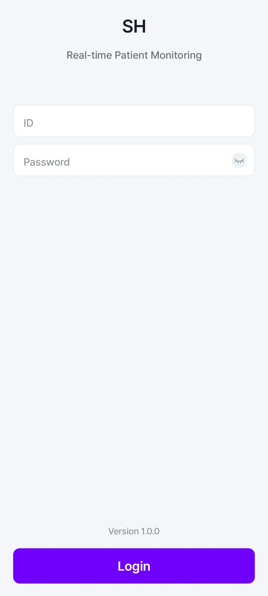
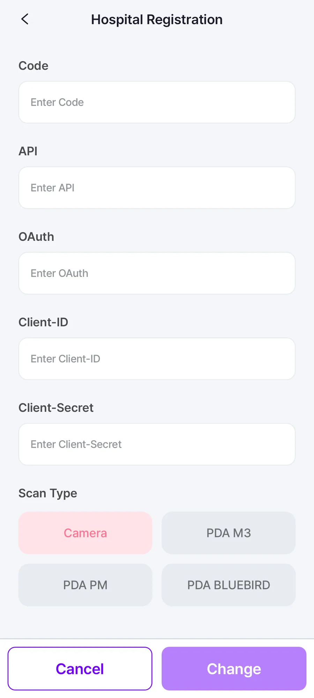
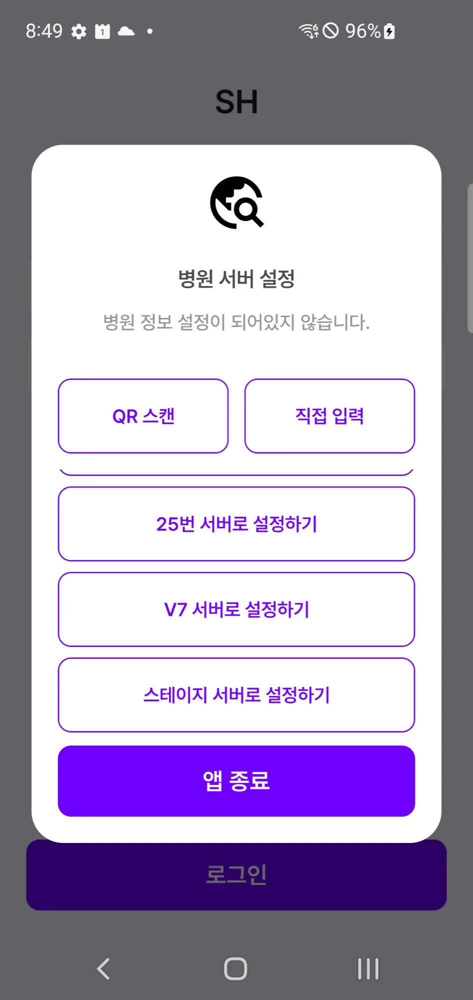
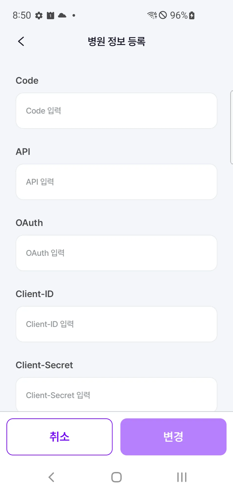
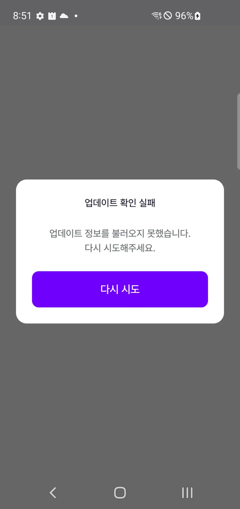
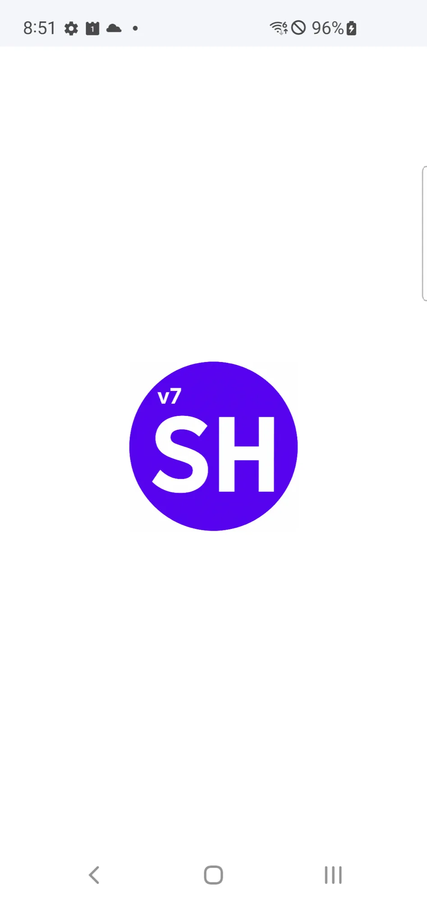
바코드 파싱 결과에 따라 환자·기기 매핑 및 해제. ParseBarcodeContentsUseCase로 sealed 분기 처리
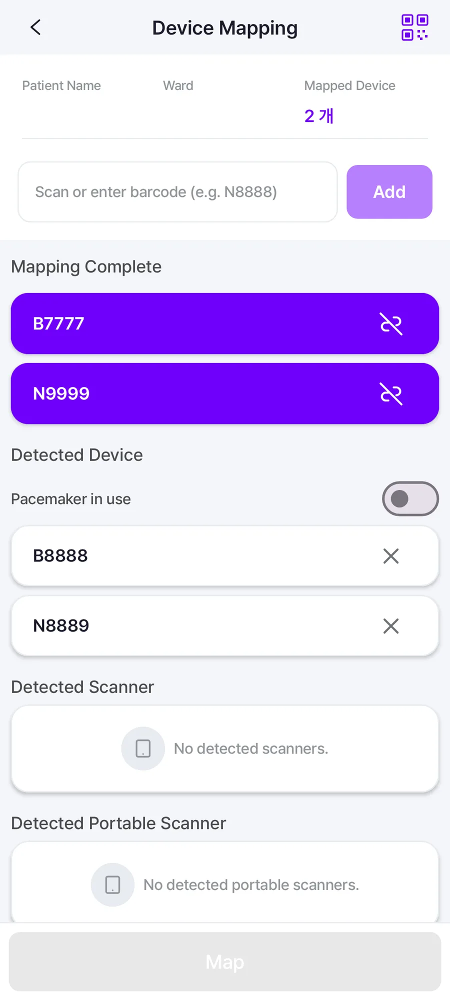
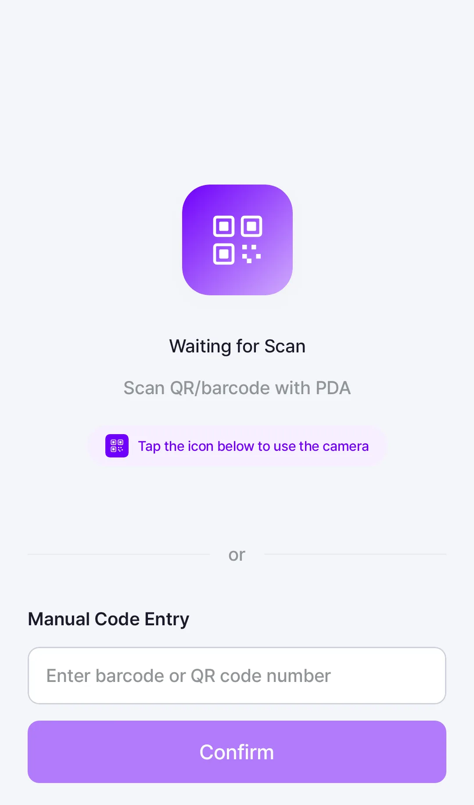
WebSocket 기반 실시간 바이탈 수신. 일자별 DailyVitalSign 리스트 및 모니터링 화면 제공
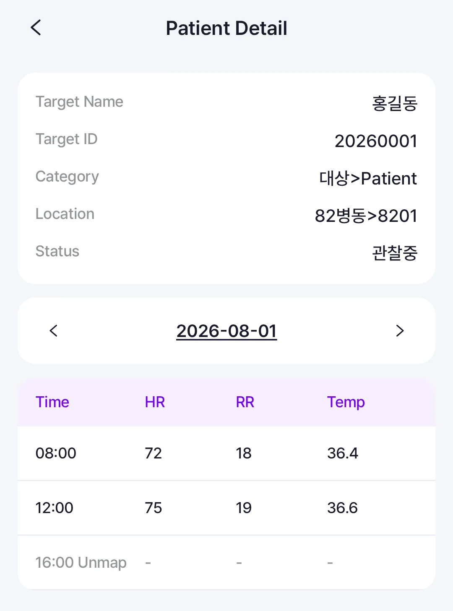
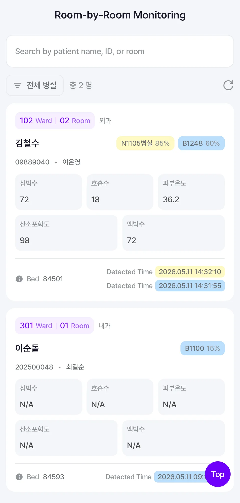
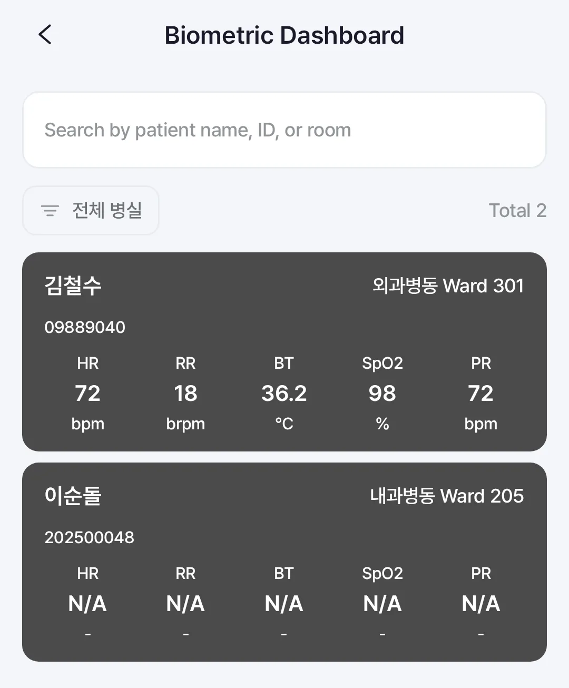
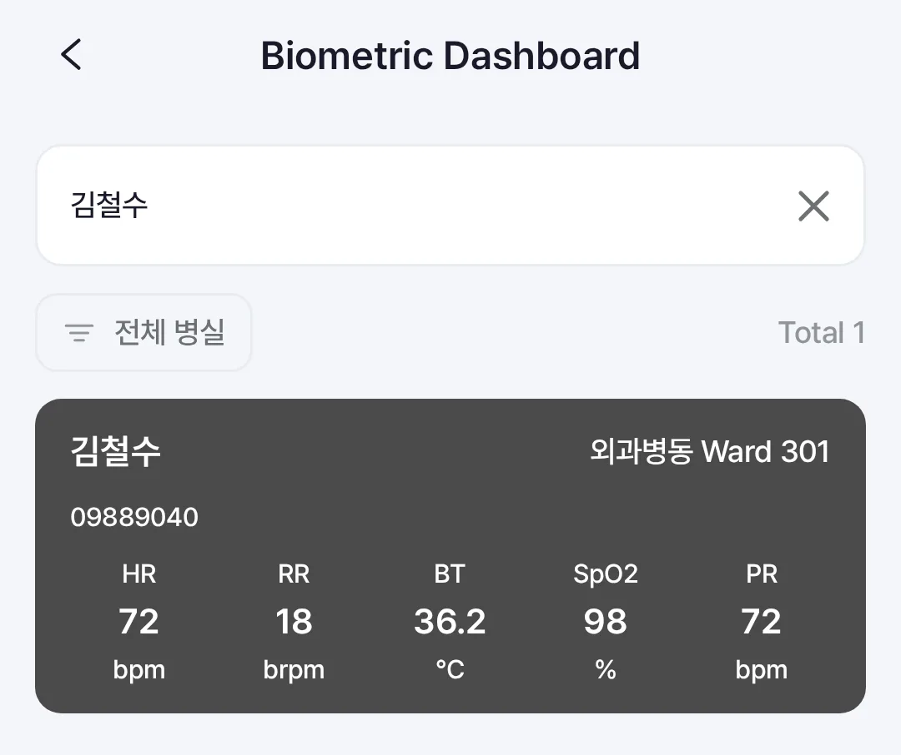
이상 징후·이탈 알림과 알림 이력을 한 곳에서 확인. 전역 이벤트는 EventHelper 채널로 일원화해 feature 간 결합 없이 전파
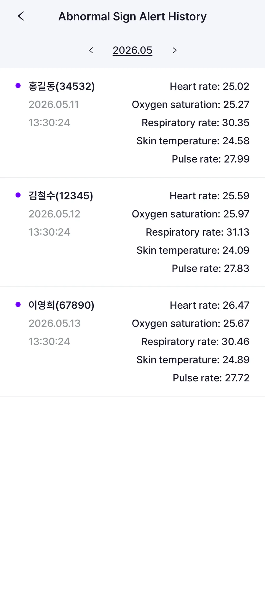
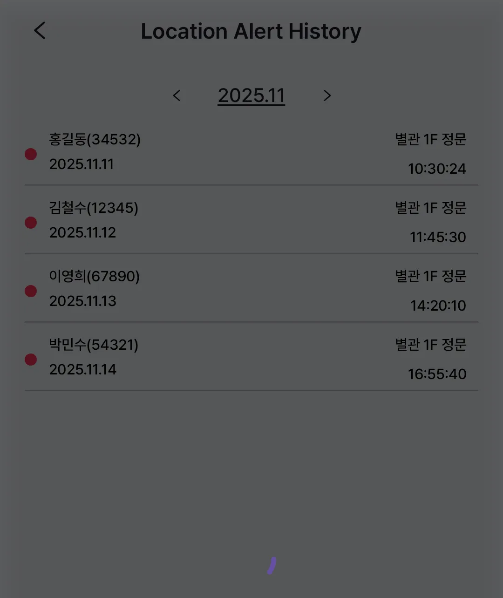
위젯 구성과 이탈 감지 등 앱 환경설정 관리
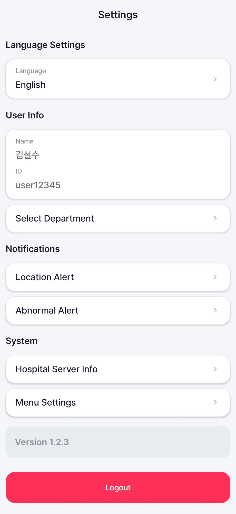
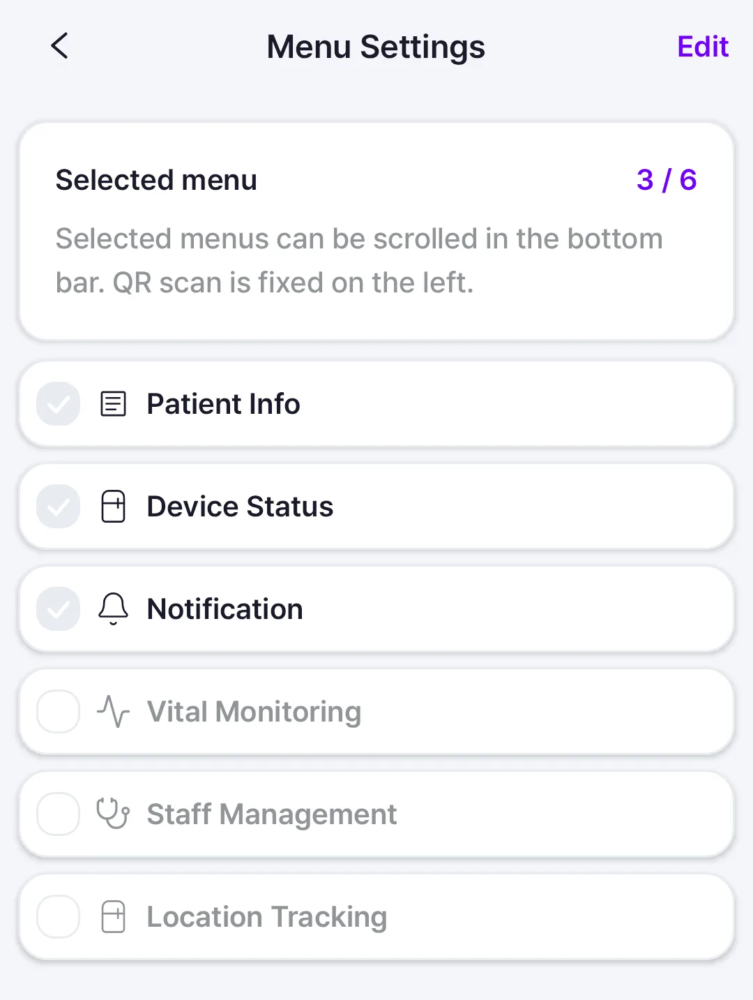
연동된 IoT 기기 상세 상태 확인
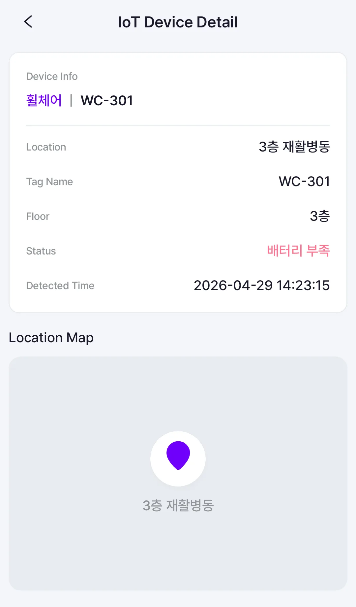
근무할 부서를 선택하고 관리
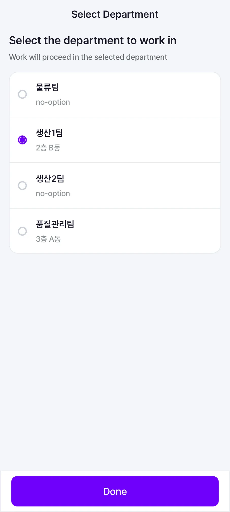
Architecture Improvement
SI 방식에서 공통 모듈 구조로의 전환
BEFORE — SI 방식
프로젝트별 "개발 후 폐기" 반복. 병원마다 코드베이스 복제, 공통 버그 수정도 각각 적용 필요. 신규 병원 추가 시 전체 재개발에 가까운 공수 발생
AFTER — 공통 모듈 구조
feature 모듈 기반 단일 코드베이스. 병원별 차이는 ScanType · HospitalConfig 분기로 흡수. 버그 수정 1회로 전 병원 반영
Case Study 01
병원마다 다른 메뉴 요구사항을, 코드 분기 없이 하나의 원소스로 흡수한 방법
Problem — 병원마다 열어줘야 할 메뉴가 다른 구조
병원마다 실제로 사용할 메뉴가 다르고, 어떤 메뉴를 열어줄지는 병원 현장의 관리자가 정합니다. 기존 SI 방식에서는 병원별로 메뉴 구성이 다른 앱을 각각 별도로 빌드·배포했는데, 이 방식이 유지되는 한 아무리 내부 로직을 공통 모듈로 정리해도 진짜 의미의 원소스라고 보기 어려웠습니다. 병원별로 메뉴 구성 자체가 다르다는 문제를 코드 분기가 아니라 설정값으로 흡수할 방법이 필요했습니다.
Solution — 설정 화면에서 메뉴를 직접 켜고 끄고, 하단 바는 선택된 만큼만 스크롤로
설정(Setting) 화면에 메뉴(Widget) on/off 및 드래그 재정렬 기능을 구현해, 관리자가 이 병원에서 열어줄 메뉴를 직접 고를 수 있게 했습니다. 선택 결과는 DataStore에 로컬로 저장되고, 하단 내비게이션 바는 고정된 탭이 아니라 선택된 메뉴 개수만큼 가로 스크롤되는 구조로 만들어, 병원마다 메뉴 개수와 구성이 달라도 코드 분기 없이 같은 화면·같은 코드로 대응할 수 있게 했습니다.
WidgetManagerImpl.kt — 선택된 메뉴를 DataStore에 저장/조회
class WidgetManagerImpl @Inject constructor( private val localWidgetDataSource: LocalWidgetDataSource, ) : WidgetManager { override val selectedCodes: Flow<List<WidgetCode>> = localWidgetDataSource.widgetCodes.map { raw -> raw.split(",") .filter { it.isNotEmpty() } .mapNotNull { name -> WidgetCode.entries.find { it.name == name } } .ifEmpty { DEFAULT_CODES } } override suspend fun saveSelectedCodes(codes: List<WidgetCode>) { localWidgetDataSource.setWidgetCodes(codes.joinToString(",") { it.name }) } }
하단 바는 선택된 코드 목록을 실제 내비게이션 목적지로 변환한 뒤, 고정 탭이 아니라
horizontalScroll이 적용된 Row로 렌더링합니다.
SHAppBottomBar.kt — 선택된 메뉴 개수만큼 가로 스크롤되는 하단 바
val destinations = remember(selectedWidgetCodes) { selectedWidgetCodes.mapNotNull { TopLevelDestination.fromWidgetCode(it) } } // 고정 탭이 아니라, 선택된 메뉴 수만큼 가로 스크롤되는 Row Row( modifier = Modifier .fillMaxHeight() .horizontalScroll(rememberScrollState()), ) { destinations.forEach { destination -> SHBottomBarItem(destination = destination, ...) } }
메뉴를 끄면 그 화면이 열려 있을 때 뒤로가기로 접근할 수 없도록, MainActivity가
selectedWidgetCodes를 계속 관찰하다가 방금 비활성화된 목적지의 백스택을 함께 정리합니다.
Case Study 02
제조사가 달라도 코드 한 줄만 늘리면 대응되는 구조, 그리고 프로젝트 간 재사용까지
Problem — 병원마다 다른 PDA 제조사, 그대로 두면 기기 수만큼 분기
병원마다 도입된 바코드 스캐너(PDA) 제조사가 M3Mobile · PointMobile · Bluebird 등으로 제각각입니다. 제조사별 SDK는 초기화 방식, 리스너 등록 방식, 이벤트 전달 방식까지 전부 달라서, 그대로 화면 코드에 가져다 쓰면 기기 종류만큼 분기가 생기고, 새 제조사가 추가될 때마다 기존 화면·ViewModel까지 건드려야 하는 구조가 됩니다.
Solution — 인터페이스로 감추고, ScanType 하나로 런타임 위임
스캔 로직을 PdaManager 인터페이스로 추상화하고, 제조사별 구현체(M3Mobile · PointMobile ·
Bluebird)와 비-PDA 환경을 위한 NoOpPdaManager를 인터페이스 뒤로 감췄습니다. 화면과
ViewModel은 이 인터페이스 하나만 바라보기 때문에 어떤 PDA를 쓰는지 알 필요가 없습니다.
core/pda/PdaManager.kt — 모든 제조사 구현체가 따르는 공통 인터페이스
interface PdaManager { fun initialize() fun barcodeFlow(): Flow<String> fun release() }
병원 설정에 저장된 ScanType 값에 따라 DynamicPdaManager가 알맞은 구현체를
골라 위임합니다. 새 제조사가 추가되면 구현체 클래스 하나, ScanType 값 하나,
when 분기 한 줄만 늘리면 되고 — 기존 화면·ViewModel 코드는 전혀 건드리지 않습니다.
app/di/PdaModule.kt — ScanType에 따라 알맞은 구현체로 위임
private class DynamicPdaManager( private val context: Context, private val scanConfigManager: ScanConfigManager, ) : PdaManager { private var delegate: PdaManager = NoOpPdaManager override fun initialize() { delegate = runBlocking { when (scanConfigManager.scanConfig.first().scanType) { ScanType.PdaM3 -> M3BarcodeManagerImpl(context) ScanType.PdaPm -> PMBarcodeManagerImpl(context) ScanType.PdaBlueBird -> BluebirdSdkManagerImpl(context) else -> NoOpPdaManager } } delegate.initialize() } override fun barcodeFlow(): Flow<String> = delegate.barcodeFlow() override fun release() = delegate.release() }
여기서 한 걸음 더 나아가, core:pda 모듈 자체를 별도 저장소로 분리해 Git
Submodule로 관리하고 있습니다. 이 프로젝트 안에서만 쓰고 버리는 코드가 아니라, 다른
프로젝트에서도 그대로 가져다 재사용할 수 있는 독립된 모듈로 만든 것입니다.
.gitmodules — core:pda는 독립 저장소로 분리된 서브모듈
[submodule "core/pda"]
path = core/pda
url = https://github.com/pntbiz-mobile/AOS_PDA_Interface.git
Case Study 03
리뷰어의 눈에만 기대지 않고, 테스트와 정적 분석으로 품질을 자동으로 지키는 방법
Problem — 기능이 늘수록 리뷰만으로는 못 잡는 것들
참여 인원과 기능이 늘면서 코드 품질을 리뷰어의 눈에만 의존하기 어려워졌습니다. Mockito 기반 테스트는 mock 설정이 복잡해질수록 테스트 자체를 읽고 유지보수하기 어려워졌고, 네이밍·파일 구조·Preview 누락 같은 컨벤션 위반은 리뷰 때마다 반복적으로 지적되는 문제였습니다.
Solution 1 — Mockito 없이 Fake/Spy + BDD 스타일 테스트
Mockito 없이 Fake/Spy를 직접 구현하고, given/when/then 구조와 한글 테스트명으로 의도가
바로 읽히는 단위 테스트를 작성했습니다. core:testing 모듈에 재사용 가능한 Fake/Spy를
모아두어 프로덕션 코드에 테스트 전용 분기가 섞이지 않도록 했습니다.
core/testing/SpyMappingRepository.kt — 호출 횟수·요청 값을 직접 기록하는 Spy
var mappingDeviceCallCount: Int = 0 private set val mappingDeviceRequests: MutableList<MappingDeviceRequest> = mutableListOf() var mappingDeviceThrowable: Throwable? = null override suspend fun mappingDevice(...) { mappingDeviceCallCount += 1 mappingDeviceRequests += MappingDeviceRequest(...) mappingDeviceThrowable?.let { throw it } }
MappingRepositoryImplTest.kt — given/when/then + 한글 테스트명
@Test fun `deviceInfo 만 들어오는 바코드 응답이면 기기 정보만 스캔된 것이고, 환자 정보는 없다`() = runTest { // given mappingDataSource.setBarcodeResponse(MockBarcodeResponse.deviceInfoOnly()) // when val result = mappingRepository.fetchBarcodeResult(barcode = "01230123", groupNum = 10) // then assertTrue(result is BarcodeScanResult.UnMappedDevice) }
Solution 2 — 반복되는 리뷰 지적을 커스텀 Lint 6종으로 자동화
같은 리뷰 코멘트가 반복된다는 건 사람이 아니라 도구가 잡아야 한다는 신호였습니다. Screen 파일 구조, Preview 가시성·누락, Enum·Object 네이밍, when 블록 스타일 등을 검사하는 커스텀 Lint 규칙 6종을 만들어 빌드 타임에 자동으로 검사하도록 했습니다.
lint/EnumObjectPascalCaseDetector.kt — Enum 상수가 PascalCase인지 검사
override fun createUastHandler(context: JavaContext): UElementHandler = object : UElementHandler() { override fun visitClass(node: UClass) { if (!node.isEnum) return node.fields.filter { it.javaPsi is PsiEnumConstant }.forEach { field -> val name = field.name ?: return@forEach if (!name.isPascalCase()) { context.report( issue = Issues.EnumObjectPascalCase, location = context.getLocation(field.sourcePsi ?: return@forEach), message = "'$name' 은(는) PascalCase로 작성되어야 합니다.", ) } } } }
이 Lint 모듈은 build-logic 컨벤션 플러그인 안에 이미 포함돼 있어서, feature 모듈이
Compose 라이브러리 컨벤션만 적용하면 별도 설정 없이 6종의 검사를 자동으로 물려받습니다 — 멀티모듈
전체에 규칙을 일관되게 적용하기 위해 앞서 만든 build-logic 구조를 그대로 활용한 것입니다.
Architecture Detail
Smart Hospital
20개 이상 병원에 실 도입된 B2B 실시간 환자 모니터링 앱